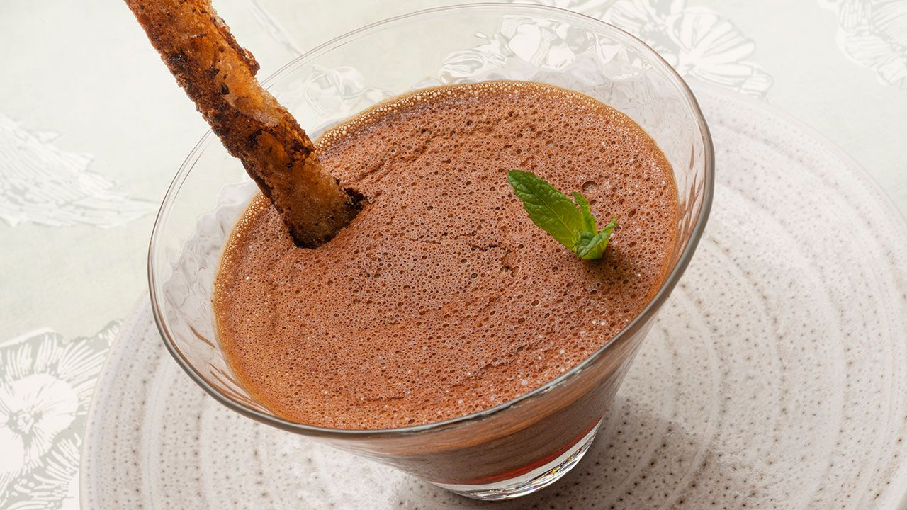
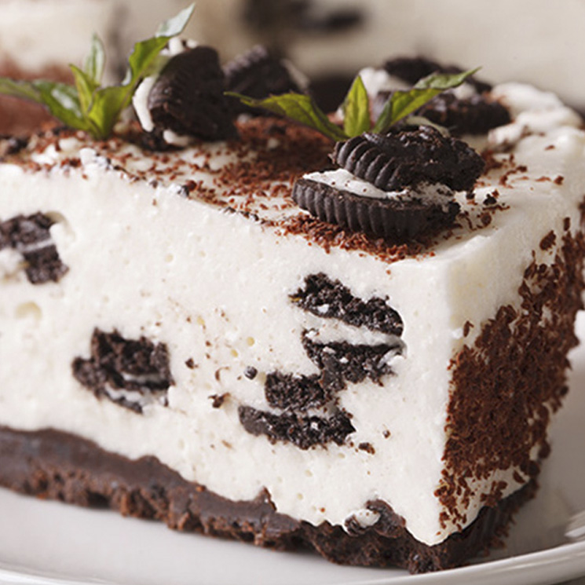
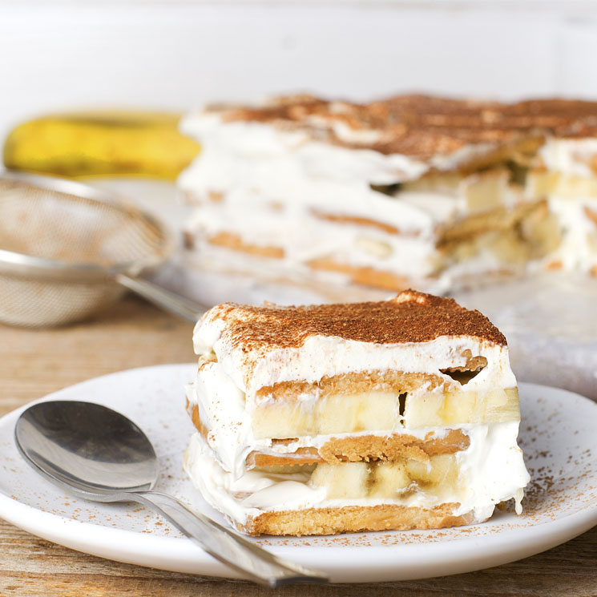

Recetas
debo confesar que me encantan los postres y mas de chocolate ¿acaso quien no se resiste a esta dulce tentacion? el chocolate ha sido el complemento perfecto para una buena ocacion, un detalle de fina coqueteria, una buena taza de chocolate une familias, es por esto que el chocolate ha sido parte fundamental de mi vida.
aca les dejo una receta sencilla con la que podras sorprender.
Flan de chocolate
Un postre muy rico, que gusta a todo el mundo y súper fácil de hacer
Ingredientes para 4 personas.
Preparacion
- Pon 75 gramos de azúcar blanco a calentar en una sartén y añade unas gotas de limón. Cuando se funda y se consiga un caramelo tostado, repártelo en los moldes.
- Pon la mitad de la leche a calentar y añade el chocolate. Deja que se disuelva y resérvalo.
- Coloca el resto de leche en un bol, y añade dos huevos y dos yemas. Incorpora el resto de azúcar blanca y mezcla bien. Añade un poco de la leche chocolateada y mezcla. Añade el resto y sigue mezclando.
- Reparte la mezcla en los 4 recipientes y hornea al baño María a 180ºC durante 30 minutos.
- Derrite la mantequilla en una sartén y fríe los bastones de pan. Espolvorea con azúcar moreno y una pizca de canela. Sirve los flanes y adorna con los palitos de pan y menta 
- 2 paquetes de galletas oreo (de 150 gramos cada uno
- 80 g de mantequilla sin sal.
- 300 g de Queso cremoso.
- 300 ml de nata para montar.
- 80 g de azucar blanca
- Trituramos uno de los paquetes de galletas Oreo para la base, utilizando un mortero o una picadora, pero sin que lleguen a quedar muy pulverizadas.
- Derretimos la mantequilla en el microondas. Cuando esté fundida, vertemos encima las galletas picadas y mezclamos todo bien. Ponemos la pasta en el fondo del molde, presionando con una cuchara o con las propias manos, buscando conseguir una base compacta y lo más lisa posible. Reservamos en la nevera para que se enfríe mientras preparamos el resto de la tarta
- Ponemos el queso crema en un bol y lo batimos con ayuda de unas varillas eléctricas, para que quede aún más suave.
- En otro bol, montamos la nata, también con unas varillas eléctricas. Cuando empiece a estar espesa, le añadimos el azúcar, sin dejar de batir, hasta que adquiera una consistencia densa y se haya montado bien.
- Agregamos, poco a poco, el queso al bol de la nata e integramos por completo.
- Sacamos el molde del frigorífico y vertemos el relleno. Lo alisamos con una cuchara y lo metemos de nuevo en la nevera durante 4 horas aproximadamente.
- Transcurrido este tiempo, lo sacamos y, con las galletas restantes, las picamos y las espolvoreamos por encima. Cortamos el resto con las manos y las vamos colocando por la superficie a modo de decoración. 
- 4 ud llemas de huevo.
- 2 ud de claras de huevo.
- 100 g de azucar balnca.
- 200 g de bizcocho tipo soletilla.
- 400 g de queso mascarpone./li>
- 175 ml de cafe expreso.
- Licor Amaretto al gusto (se puede usar también 'brandy' o licor de avellanas)
- Cacao en polvo sin azúcar para decorar
- 75 g de Chocolate blanco
- En un bol grande, mezclamos las yemas de huevo con el azúcar y batimos bien hasta que todo se integre. Añadimos entonces el queso 'mascarpone', el chocolate blanco y batimos de nuevo.
- En otro bol, montamos las claras a punto de nieve con una batidora de varillas y reservamos.
- Mezclamos el café expreso con el licor de Amaretto y vamos empapando los bizcochos de soletilla, colocándolos en fila en una bandeja. Lo cubrimos todo con la mezcla de queso 'mascarpone', colocamos una segunda capa de bizcochos y, de nuevo, cubrimos con otra capa de queso 'mascarpone'. Repetimos el proceso una tercera vez si nuestro molde es muy alto.
- Espolvoreamos con cacao en polvo y dejamos que se enfríe en la nevera, al menos, tres horas. 
Tarta de queso con galletas oreo
Ingredientes para 8 personas.
Preparacion
Tiramisú de chocolate blanco
delicioso postre italiano con un toque de sabor a cafe